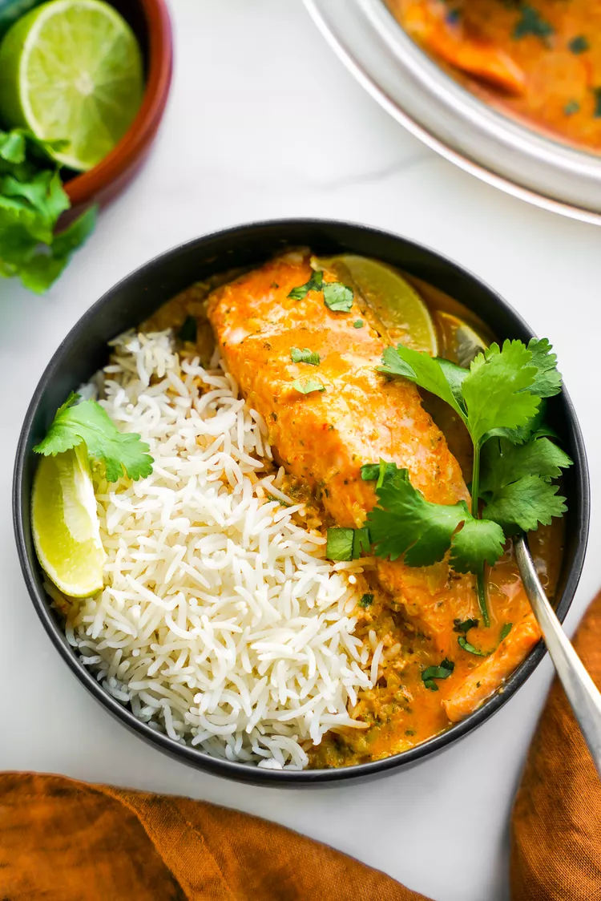

We love easy weeknight dinner recipes that pack a lot of flavor with little effort. For this recipe, we lean on the microwave to poach salmon fillets in a highly aromatic coconut red curry. The trick to getting the most flavor into the coconut milk is to sizzle aromatics in a little oil (more on that below) and you can do that in the microwave too. We would eat this tasty meal over a generous scoop of jasmine rice, a sprinkle of fresh cilantro, and a generous squeeze of fresh lime juice on top.
Process the oil, shallots, cilantro, jalapeño, lemongrass, and ginger in a mini food processor until very finely chopped, about 30 seconds, stopping to scrape down sides as needed.
Don’t have a mini food processor? Very finely chop the shallots, cilantro, jalapeño, lemongrass, and ginger, and then stir in the oil. (You can do this directly in the pie plate—more on that below.)
Spoon the mixture into a 9 1/2-inch microwave-safe glass pie plate. Microwave, uncovered, on high until it sizzles and is fragrant, 3 to 4 minutes
Stir in the coconut milk, curry paste, brown sugar, and 1/2 teaspoon salt until combined. Microwave, uncovered, on high until the coconut milk mixture is simmering and the flavors meld, 3 to 4 minutes.
Stir in the lime juice and place the salmon fillets, evenly spaced apart, in coconut milk mixture. Sprinkle the remaining 1/4 teaspoon salt on the salmon. Cover tightly with plastic wrap and microwave on medium (50% power) until the salmon is cooked to your desired degree of doneness, about 6 minutes.
We developed and tested the recipe in a 1,000 and 1,250-watt microwave. You may need to cook the salmon for longer, in 1-minute intervals, depending on the power of your microwave and how you like your salmon cooked.
Garnish with cilantro and serve scooped over cooked rice.